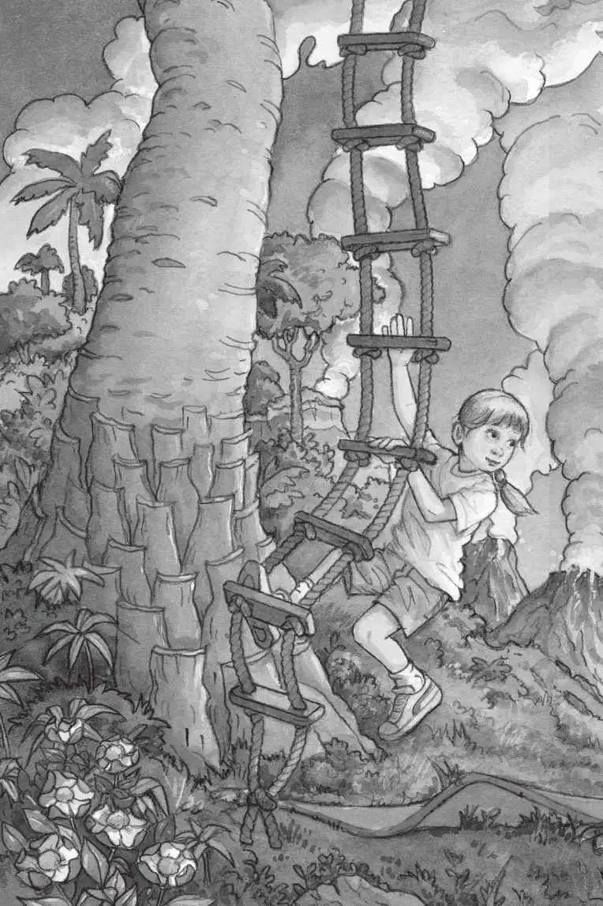
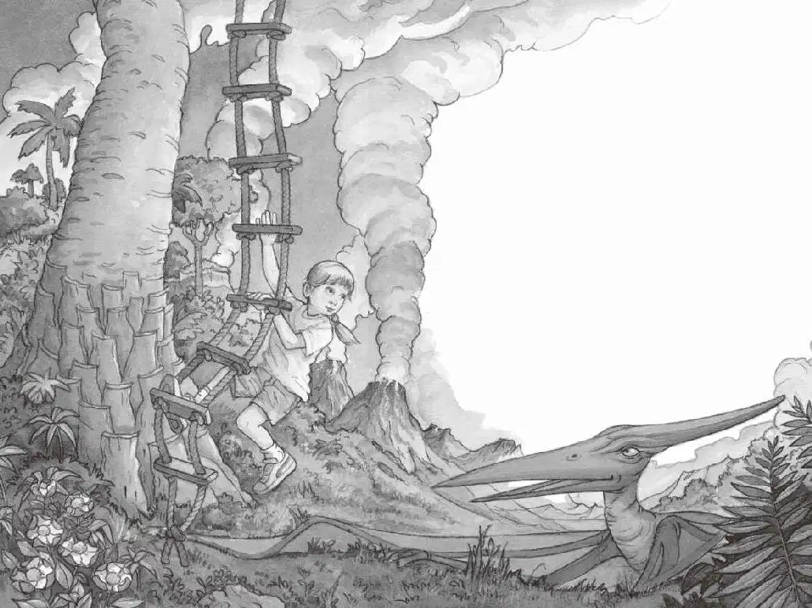

杰克睁开眼睛，阳光从窗外斜射进来。
树屋仍然停在一棵树的高处。
但这棵树已经不是原来的那棵树了。
“我们在哪儿？”安妮问，她和杰克朝窗外看了看。
只见那只无齿翼龙还在天空飞翔。
地上长满了蕨类植物和高高的野草，远处有一条蜿蜒的河流、一座倾斜的小山和几座火山。
“我……我也不知道我们在哪儿。”杰克说。
无齿翼龙降落在地面，停在大树旁边，一动不动地站着。
“刚才发生了什么？”安妮问。
“呃……”杰克回想了一下说，“当时我正在看书里的那幅图片——”
安妮紧接着说道：“然后你就说：‘哇哦，真希望我们能去无齿翼龙的时代看看。’”
“没错，然后我们就在蛙溪的树林里看见了一只无齿翼龙。”杰克说。
“是啊，接着风呼呼地刮了起来，树屋就开始旋转了。”安妮补充道。
“然后我们就落在这儿了。”杰克说。
“对，然后我们就落在这儿了。”安妮说。
“这就意味着……”杰克若有所思。
“这就意味着……什么？”安妮问。
“不知道，”杰克摇摇头，“这些应该都不是真的。”
“可是它是真的呀！”安妮指着窗外的无齿翼龙说，“它确实是在那儿啊。”
杰克和安妮又一起朝窗外看去，无齿翼龙像卫兵一样站在树底下，一对巨大的翅膀在身体两侧展开。
“你好啊！”安妮跟无齿翼龙打招呼。
“嘘！”杰克连忙说，“我们不应该在这儿的。”
“可是，这儿到底是哪儿呢？”安妮问。
“我也不知道。”杰克说。
“你好！你是谁呀？”安妮又朝无齿翼龙喊。
无齿翼龙只是抬头看了看安妮。
“你疯了吗？它又不会说话！”杰克叫道，“不过，说不定我们可以在书里找到点儿什么。”

杰克翻开那本恐龙书，找到了一幅无齿翼龙的图片。
他将图片下面的文字读了出来：
这种会飞的爬行动物生活在白垩纪，
六千五百五十万年前，和恐龙一起消失。
“这不可能！”杰克说，“我们不可能回到六千五百五十万年前！”
“杰克，你看，它好像脾气很好呢。”

“脾气很好？”杰克怀疑地看了看无齿翼龙。
“是啊，我看得出来。”安妮说，“我们下去找它吧。”
“下去？”杰克有点儿迟疑。
可安妮已经开始顺着绳梯往下爬了。